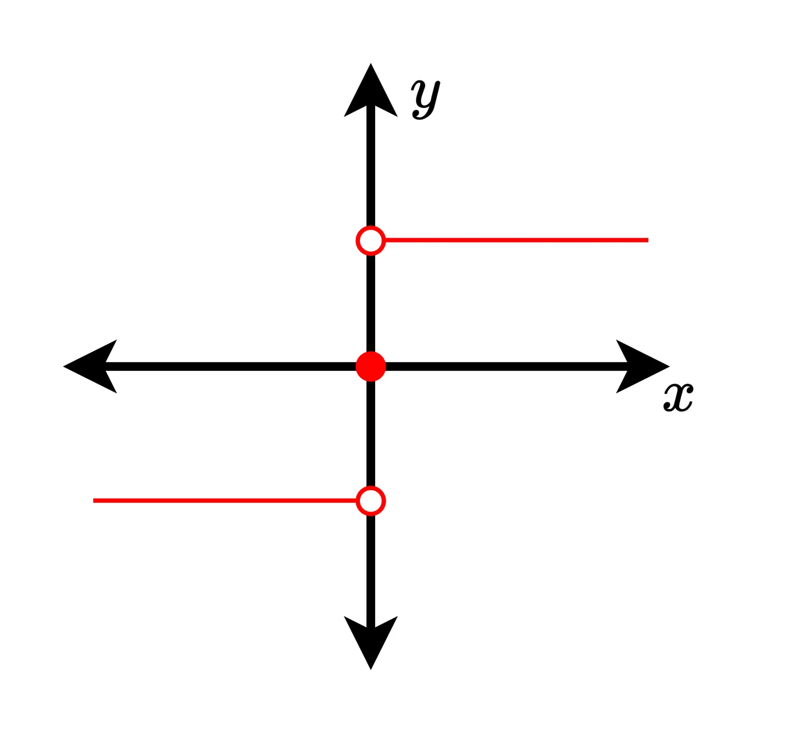
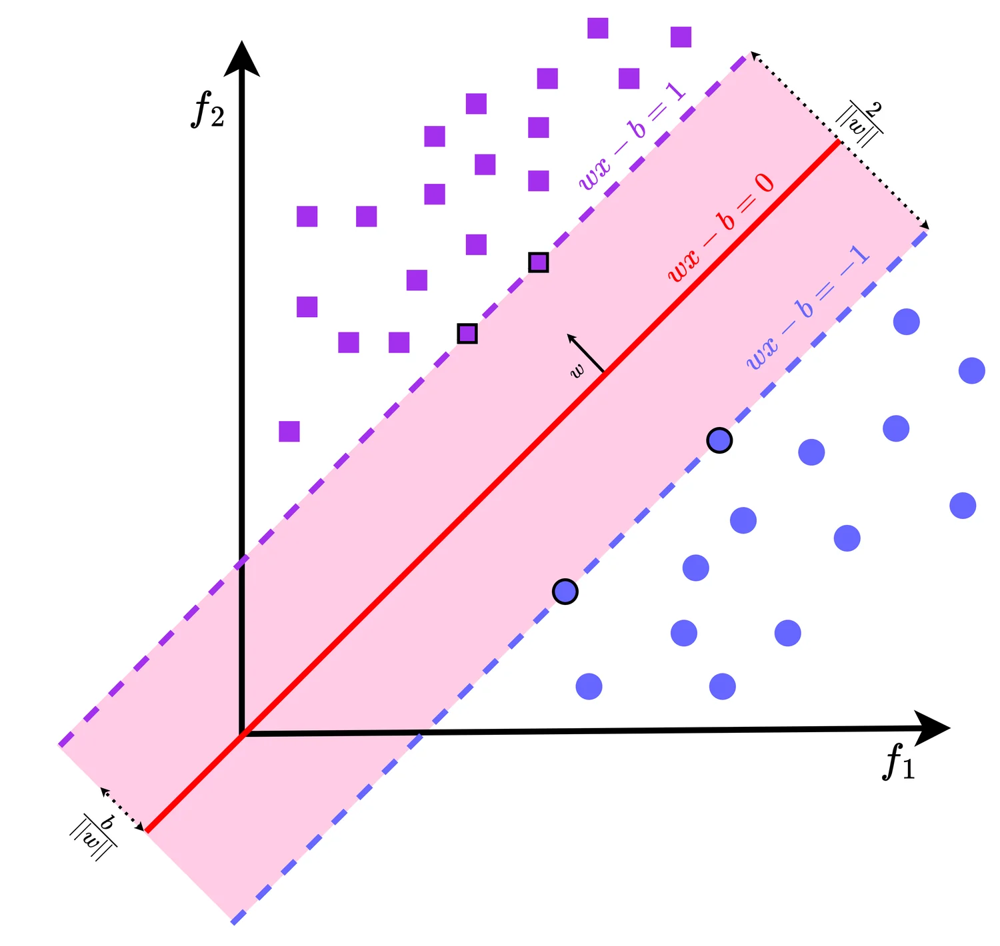
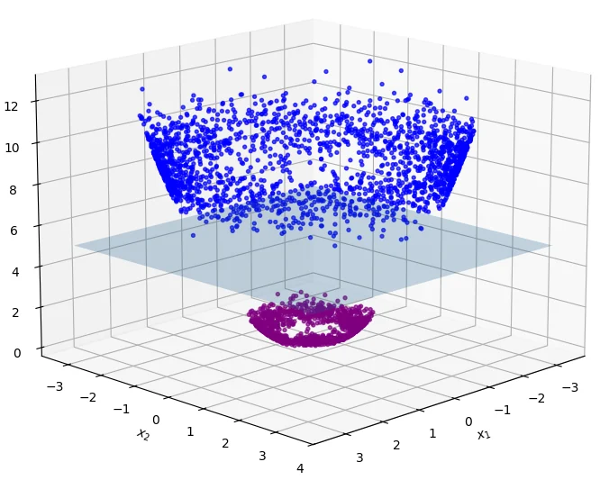

Supervised Learning I
Linear models and the kernel methods that free them. The perceptron, support vector machines, least squares and its regularised cousins — then the trick that lets all of them draw curved boundaries without ever leaving linear algebra.
Part 3.1 · Linear Classification
Supervised learning means learning a mapping \(f: \mathcal{X} \to \mathcal{Y}\) from input features \(\mathcal{X} \subseteq \mathbb{R}^n\) to output labels \(\mathcal{Y}\), guided by example pairs \((x_i, y_i)\). The goal is an \(f\) whose predictions \(\hat{y}_i = f(x_i)\) closely match the true labels.
Two paradigms:
- Classification — \(\mathcal{Y}\) is discrete, e.g. \(\{0,1\}\) or \(\{1,\dots,k\}\). We look for decision boundaries separating the classes.
- Regression — \(\mathcal{Y}\) is continuous. We look for a function that best approximates the trend.
Linear separability
A dataset is linearly separable if some hyperplane perfectly divides the classes. In \(\mathbb{R}^n\) a hyperplane is
\[ w^\top x + b = 0, \]where \(w \in \mathbb{R}^n\) is the weight vector setting the orientation and \(b \in \mathbb{R}\) the bias setting the offset from the origin. Geometrically \(w\) is orthogonal to the hyperplane, and the sign of \(w^\top x + b\) says which side a point falls on. In two dimensions the hyperplane is a line; in three, a plane.
For a sample \((x_i, y_i)\) with \(y_i \in \{-1, +1\}\), correct classification means
\[ y_i\big(w^\top x_i + b\big) > 0, \]and the dataset is linearly separable if every point satisfies this.
Because it collapses two cases into one. Class \(+1\) should give a positive value and class \(-1\) a negative one; multiplying by \(y_i\) makes both conditions read "positive". That single product, called the functional margin, is the quantity every algorithm in this chapter is built around.
Is this line a valid separator?
Drag the boundary and watch every functional margin update. Any negative product circles the offending point in red.
Four points, with the line \(x_1 + x_2 - 1 = 0\) — that is \(w = (1,1)\), \(b = -1\):
| Point \((x_1, x_2)\) | Class \(y\) | \(w^\top x + b\) | \(y(w^\top x + b)\) |
|---|---|---|---|
| (1, 1) | +1 | 1 + 1 − 1 = 1 | (+1)(1) = 1 > 0 ✓ |
| (2, 2) | +1 | 2 + 2 − 1 = 3 | (+1)(3) = 3 > 0 ✓ |
| (1, −2) | −1 | 1 − 2 − 1 = −2 | (−1)(−2) = 2 > 0 ✓ |
| (−1, −3) | −1 | −1 − 3 − 1 = −5 | (−1)(−5) = 5 > 0 ✓ |
All four products are positive, so this dataset is linearly separable and this particular line is one valid separator. The obvious next question: how do we find such a line systematically, rather than by inspection?
The perceptron algorithm
The perceptron is one of the earliest learning algorithms for linear classification. It looks for a separating hyperplane by repeatedly nudging its parameters toward misclassified points.
Model. \(f(x) = \operatorname{sign}(w^\top x + b)\), with \(w\) and \(b\) learned from data.
Update rule. For a misclassified sample, i.e. one with \(y_i(w^\top x_i + b) \le 0\):
\[ w \leftarrow w + \eta\, y_i x_i, \qquad b \leftarrow b + \eta\, y_i, \]where \(\eta > 0\) is the learning rate. Correctly classified points produce no update at all.
Step through the updates
The notes' four-point dataset, one iteration at a time. Then switch to XOR and watch it never terminate.
Same four points. Initialise \(w = (0,0)\), \(b = 0\), \(\eta = 1\), and pass over the samples in order:
| Step | Sample \((x, y)\) | \(y(w^\top x + b)\) | Update? | New \(w\) | New \(b\) |
|---|---|---|---|---|---|
| 0 | (1, 1), +1 | 0 ≤ 0 | yes | (1, 1) | 1 |
| 1 | (2, 2), +1 | 5 > 0 | no | (1, 1) | 1 |
| 2 | (1, −2), −1 | 0 ≤ 0 | yes | (0, 3) | 0 |
| 3 | (−1, −3), −1 | 9 > 0 | no | (0, 3) | 0 |
| 4 | full pass | all > 0 | no | (0, 3) | 0 |
It converges in a single pass to \(w^\star = (0,3)\), \(b^\star = 0\), whose boundary is \(3x_2 = 0\), i.e. \(x_2 = 0\).
Note that this is a different separator from the hand-picked \(x_1 + x_2 - 1 = 0\), and both are perfectly valid. The perceptron's solution is not unique — it depends on the initialisation, the learning rate, and the order the data arrives in. It stops at the first separator it finds, not the best one.
import numpy as np
def perceptron(X, y, eta=1.0, epochs=100):
w = np.zeros(X.shape[1])
b = 0.0
for _ in range(epochs):
errors = 0
for xi, yi in zip(X, y):
if yi * (w @ xi + b) <= 0: # misclassified
w += eta * yi * xi
b += eta * yi
errors += 1
if errors == 0: # a clean pass: converged
return w, b
return w, b # not separable -- gave up
The gradient descent view
The perceptron predates gradient descent, but its update is exactly stochastic gradient descent on the perceptron loss
\[ L(w, b) = \max\big(0,\; -y_i(w^\top x_i + b)\big). \]The gradients are
\[ \frac{\partial L}{\partial w} = \begin{cases} -y_i x_i & \text{if } y_i(w^\top x_i + b) \le 0, \\ 0 & \text{otherwise,}\end{cases} \qquad \frac{\partial L}{\partial b} = \begin{cases} -y_i & \text{if } y_i(w^\top x_i + b) \le 0, \\ 0 & \text{otherwise.}\end{cases} \]so one stochastic gradient step is
\[ w \leftarrow w - \eta\frac{\partial L}{\partial w} = w + \eta y_i x_i, \qquad b \leftarrow b - \eta\frac{\partial L}{\partial b} = b + \eta y_i, \]which is the update rule verbatim. It also explains the "only on misclassified points" condition: for a correctly classified sample both gradients are zero, so the step leaves \(w\) and \(b\) untouched.
The two are easy to confuse and they appear within pages of each other. The perceptron loss above is \(\max(0, -y f(x))\) — zero as soon as a point is on the correct side, however narrowly. The hinge loss, which the SVM uses, is
\[ L_{\text{hinge}} = \max\big(0,\; 1 - y_i(w^\top x_i + b)\big), \]with a margin of 1 built in. That single change is the entire difference between "find any separator" and "find the separator with the widest gap", and it is why the perceptron stops the moment it is barely correct while the SVM keeps pushing.
Limitations of the perceptron
- Requires linear separability. It converges only when a perfect linear boundary exists. On XOR it never terminates.
- No margin maximisation. Among all separating hyperplanes it does not seek the one with the widest gap, which usually generalises worse.
- Sensitive to initialisation and learning rate. Poor choices cause oscillation or slow convergence, and change which separator you land on.
A perceptron boundary can pass arbitrarily close to a training point — it only has to be on the right side by any amount at all. Unseen data drawn from the same distribution will then land on the wrong side of it. A boundary that keeps its distance from both classes has room to absorb that variation. That observation is the whole motivation for the support vector machine.
Part 3.2 · Support Vector Machines
Among all separating hyperplanes, the SVM picks the one with the maximum margin: the widest possible corridor between the classes.
The distance from a point \(x_0\) to the hyperplane \(w^\top x + b = 0\) is
\[ \operatorname{dist}(x_0) = \frac{|w^\top x_0 + b|}{\|w\|_2}. \]Imposing \(y_i(w^\top x_i + b) \ge 1\) places the closest points — the support vectors — exactly on the margin hyperplanes \(w^\top x + b = \pm 1\). The perpendicular distance between those two planes is
\[ \frac{|(+1) - (-1)|}{\|w\|_2} = \frac{2}{\|w\|_2}. \]So maximising the margin \(2/\|w\|\) is the same as minimising \(\|w\|\).
We minimise \(\tfrac12\|w\|^2\) rather than \(\|w\|\): the two have the same minimiser, but the squared form is smooth and strictly convex, which makes the optimisation far better behaved. The \(\tfrac12\) is pure convenience — it cancels the 2 when differentiating.
The margin, the support vectors, and C
Drag points and watch which ones actually matter. Add an outlier, then sweep C from tolerant to strict.
Primal, dual and the KKT conditions
The hard-margin problem is a convex program with linear constraints:
\[ \min_{w,b}\ \tfrac12\|w\|^2 \quad \text{s.t.}\quad y_i(w^\top x_i + b) \ge 1,\ i = 1,\dots,n. \]Introducing multipliers \(\alpha_i \ge 0\) gives the Lagrangian
\[ \mathcal{L}(w,b,\alpha) = \tfrac12\|w\|^2 - \sum_{i=1}^n \alpha_i\big(y_i(w^\top x_i + b) - 1\big), \]and setting the partial derivatives to zero yields
\[ w = \sum_{i=1}^n \alpha_i y_i x_i, \qquad \sum_{i=1}^n \alpha_i y_i = 0. \]Substituting back produces the dual problem:
\[ \begin{aligned} \max_{\alpha \in \mathbb{R}^n}\quad & \sum_{i=1}^n \alpha_i - \frac12 \sum_{i=1}^n\sum_{j=1}^n \alpha_i\alpha_j y_i y_j\, x_i^\top x_j \\ \text{s.t.}\quad & \sum_{i=1}^n \alpha_i y_i = 0, \qquad \alpha_i \ge 0. \end{aligned} \]Look at where the data appears: only as the inner product \(x_i^\top x_j\). The individual feature vectors have vanished. That is precisely the opening the kernel trick walks through — replace that inner product with \(K(x_i, x_j)\) and the whole algorithm operates in a different, possibly infinite-dimensional space at no extra cost.
At the optimum the KKT conditions hold:
\[ \begin{aligned} &\text{primal feasibility:} && y_i(w^\top x_i + b) - 1 \ge 0, \\ &\text{dual feasibility:} && \alpha_i \ge 0, \\ &\text{stationarity:} && w = \textstyle\sum_i \alpha_i y_i x_i, \quad \textstyle\sum_i \alpha_i y_i = 0, \\ &\text{complementary slackness:} && \alpha_i\big(y_i(w^\top x_i + b) - 1\big) = 0 \ \ \forall i. \end{aligned} \]Complementary slackness is the key structural fact: either \(\alpha_i = 0\), or the constraint is tight and the point sits exactly on the margin. Only points with \(\alpha_i > 0\) contribute to \(w\), and those are the support vectors. Everything else could be deleted from the dataset without changing the classifier. For any support vector \(x_k\),
\[ b = y_k - \sum_{j=1}^n \alpha_j y_j\, x_j^\top x_k, \]which in practice is averaged over all support vectors for numerical stability. The decision function is
\[ f(x) = \operatorname{sign}\Big(\sum_{i=1}^n \alpha_i^\star y_i\, x_i^\top x + b^\star\Big). \]
Soft margin and the penalty C
Perfect linear separability is rare. With outliers or overlapping classes the hard-margin constraints are simply infeasible, so we relax them with slack variables \(\xi_i \ge 0\):
\[ y_i(w^\top x_i + b) \ge 1 - \xi_i. \]- \(\xi_i = 0\): correctly classified, on or outside the margin.
- \(0 < \xi_i < 1\): inside the margin but still on the correct side.
- \(\xi_i > 1\): misclassified.
The primal becomes a trade-off between a wide margin and few violations:
\[ \min_{w,b,\xi}\ \tfrac12\|w\|^2 + C\sum_{i=1}^n \xi_i \quad\text{s.t.}\quad y_i(w^\top x_i + b) \ge 1 - \xi_i,\ \ \xi_i \ge 0. \]- Large \(C\) — violations are expensive, so the model behaves like a hard margin.
- Small \(C\) — a wider margin is preferred and outliers are tolerated.
The dual is almost unchanged; the only difference is an upper bound on the multipliers:
\[ \max_\alpha\ \sum_i \alpha_i - \frac12\sum_{i,j}\alpha_i\alpha_j y_i y_j\, x_i^\top x_j \quad\text{s.t.}\quad \sum_i \alpha_i y_i = 0,\ \ 0 \le \alpha_i \le C. \]Points with \(0 < \alpha_i < C\) are support vectors sitting on the margin; those with \(\alpha_i = C\) are margin violations or misclassifications. \(C\) is effectively the bias–variance dial.
Worked example
with \(y = +1\) on \(\mathcal{D}_+\) and \(y = -1\) on \(\mathcal{D}_-\). These are linearly separable — for instance by
\[ x_1 + x_2 - 0.5 = 0, \]which gives every point a functional margin of at least 1.5.
Solving the soft-margin problem with a large \(C\) (so it approximates the hard-margin solution) gives the maximum-margin separator
\[ w^\star \approx \begin{bmatrix} 0.276 \\ 0.448 \end{bmatrix}, \qquad b^\star \approx -0.448, \qquad \frac{2}{\|w^\star\|} \approx 3.80. \]Exactly three points sit on the margin and act as support vectors: \((2, 2)\) from the positive class, and \((-2, 0)\) and \((0.6, -1.6)\) from the negative class. Every other point could be removed without moving the boundary at all — which you can confirm by dragging them in the figure above.
Limitations of the SVM
- Computational cost. The quadratic program has \(n\) constraints and naïve implementations need \(\mathcal{O}(n^2)\) memory. Specialised solvers — Sequential Minimal Optimisation (SMO), interior-point methods, coordinate descent — are used in practice.
- Non-linear data needs kernelisation. A linear SVM cannot bend. Replacing \(x_i^\top x_j\) with a kernel \(K(x_i, x_j) = \phi(x_i)^\top\phi(x_j)\) fixes this, and is the subject of Part 3.4.
- No native probability output. The SVM returns a signed distance, not a calibrated probability. Converting one to the other requires an extra step such as Platt scaling.
Part 3.3 · Linear Regression
Classification finds boundaries between discrete classes. Regression is the other paradigm: the output space is continuous, and we fit a function that approximates the trend.
Assume a linear relationship between features \(\mathbf{X} \in \mathbb{R}^{n\times p}\) and target \(\mathbf{y} \in \mathbb{R}^n\):
\[ \mathbf{y} = \mathbf{X}\beta + \epsilon, \]where \(\beta \in \mathbb{R}^p\) holds the coefficients, \(\mathbf{X}\) includes a column of ones if an intercept is wanted, and \(\epsilon\) is random noise.
Ordinary least squares chooses \(\beta\) to minimise the residual sum of squares:
\[ L(\beta) = \|\mathbf{y} - \mathbf{X}\beta\|_2^2 = \sum_{i=1}^n (y_i - x_i^\top\beta)^2. \]Closed-form solution. Setting the gradient to zero,
\[ \frac{\partial L}{\partial \beta} = -2\mathbf{X}^\top(\mathbf{y} - \mathbf{X}\beta) = 0 \quad\Rightarrow\quad \mathbf{X}^\top\mathbf{X}\beta = \mathbf{X}^\top\mathbf{y}, \]and, provided \(\mathbf{X}^\top\mathbf{X}\) is invertible,
\[ \hat{\beta} = (\mathbf{X}^\top\mathbf{X})^{-1}\mathbf{X}^\top\mathbf{y}. \]OLS projects \(\mathbf{y}\) onto the column space of \(\mathbf{X}\). The fitted values \(\hat{\mathbf{y}} = \mathbf{X}\hat\beta\) are the closest reachable point, and the residual is orthogonal to every feature: \(\mathbf{X}^\top(\mathbf{y} - \mathbf{X}\hat\beta) = 0\). That is exactly the orthogonal projection from Chapter 1, and the normal equations are just the statement that the error must be perpendicular to everything you can reach.
Then \(\mathbf{X}^\top\mathbf{X} = \begin{bmatrix} 3 & 6 \\ 6 & 14\end{bmatrix}\) and \(\mathbf{X}^\top\mathbf{y} = \begin{bmatrix} 5 \\ 11\end{bmatrix}\), giving
\[ \hat\beta = \frac{1}{6}\begin{bmatrix} 14 & -6 \\ -6 & 3\end{bmatrix}\begin{bmatrix}5\\11\end{bmatrix} = \begin{bmatrix} 0.6667 \\ 0.5 \end{bmatrix}. \]So the fitted model is \(\hat{y} = 0.6667 + 0.5x\).
What OLS assumes.
- A genuinely linear relationship. If the data curves, no line will fit it.
- Constant residual variance (homoscedasticity) — the subject of the next section.
- \(\mathbf{X}^\top\mathbf{X}\) is invertible, i.e. no perfect multicollinearity. If the columns of \(\mathbf{X}\) are close to linearly dependent, the matrix is near-singular and the solution becomes wildly unstable. Ridge regression is the fix.
Weighted least squares
When the noise variance is not constant, OLS still gives unbiased estimates but inefficient ones: the noisiest observations get just as much say as the cleanest. WLS assigns each point a weight \(w_i > 0\), typically \(1/\sigma_i^2\):
\[ L(\beta) = \sum_{i=1}^n w_i (y_i - x_i^\top\beta)^2 = (\mathbf{y} - \mathbf{X}\beta)^\top \mathbf{W}(\mathbf{y} - \mathbf{X}\beta), \qquad \mathbf{W} = \operatorname{diag}(w_1,\dots,w_n). \]Differentiating gives the weighted normal equations and hence
\[ \mathbf{X}^\top\mathbf{W}\mathbf{X}\hat\beta = \mathbf{X}^\top\mathbf{W}\mathbf{y} \quad\Rightarrow\quad \hat\beta_{\text{WLS}} = (\mathbf{X}^\top\mathbf{W}\mathbf{X})^{-1}\mathbf{X}^\top\mathbf{W}\mathbf{y}. \]High-variance observations (small \(w_i\)) exert less influence; low-variance ones exert more. Note that if all the weights are equal, \(\mathbf{W}\) is a multiple of the identity, it cancels from both sides, and WLS reduces exactly to OLS.
When the noise fans out
Slide heteroscedasticity to zero and watch the OLS and WLS lines land on top of each other — then increase it and watch them diverge.
Ridge regression
When predictors are highly correlated — multicollinearity — \(\mathbf{X}^\top\mathbf{X}\) becomes nearly singular and OLS becomes unstable: tiny changes in \(\mathbf{y}\) produce enormous swings in \(\hat\beta\). Ridge adds a penalty on coefficient magnitude:
\[ L(\beta) = \|\mathbf{y} - \mathbf{X}\beta\|_2^2 + \lambda\|\beta\|_2^2, \]with closed-form solution
\[ \hat\beta_{\text{ridge}} = (\mathbf{X}^\top\mathbf{X} + \lambda\mathbf{I})^{-1}\mathbf{X}^\top\mathbf{y}. \]Adding \(\lambda\mathbf{I}\) lifts every eigenvalue of \(\mathbf{X}^\top\mathbf{X}\) by \(\lambda\), which guarantees invertibility however collinear the predictors are. The cost is a little bias; the gain is a large reduction in variance.
- \(\lambda \to 0\): ridge \(\to\) OLS — low bias, high variance.
- \(\lambda \to \infty\): \(\hat\beta \to 0\) — high bias, low variance.
- Moderate \(\lambda\): the useful middle, chosen by cross-validation.
Coefficient paths under shrinkage
The notes' three near-identical predictors. At λ → 0 the coefficients explode with opposite signs; increase λ and they collapse together.
Step 1 — form the normal-equation pieces.
\[ \mathbf{X}^\top\mathbf{X} = \begin{bmatrix} 4 & 3.8 & 3.8 \\ 3.8 & 3.62 & 3.61 \\ 3.8 & 3.61 & 3.62 \end{bmatrix}, \qquad \mathbf{X}^\top\mathbf{y} = \begin{bmatrix} 10.3 \\ 9.8 \\ 9.81 \end{bmatrix} \]Its determinant is \(4\times10^{-4}\) and its condition number about 3151 — very nearly singular, because the three columns are almost the same vector.
Step 2 — the OLS estimate. Solving \(\mathbf{X}^\top\mathbf{X}\beta = \mathbf{X}^\top\mathbf{y}\) exactly gives
\[ \hat\beta_{\text{OLS}} \approx \begin{bmatrix} -1.225 \\ 1.500 \\ 2.500 \end{bmatrix}. \]These are huge and include a sign flip, from a target that only varies between 2.4 and 2.8. Each coefficient is individually meaningless — they are cancelling one another out.
Step 3 — add ridge regularisation with \(\lambda = 1\).
\[ \mathbf{X}^\top\mathbf{X} + \mathbf{I} = \begin{bmatrix} 5 & 3.8 & 3.8 \\ 3.8 & 4.62 & 3.61 \\ 3.8 & 3.61 & 4.62 \end{bmatrix}, \qquad (\mathbf{X}^\top\mathbf{X} + \mathbf{I})^{-1} \approx \begin{bmatrix} 0.6707 & -0.3097 & -0.3097 \\ -0.3097 & 0.6988 & -0.2913 \\ -0.3097 & -0.2913 & 0.6988 \end{bmatrix} \]Step 4 — the ridge estimate.
\[ \hat\beta_{\text{ridge}} \approx \begin{bmatrix} 0.835 \\ 0.801 \\ 0.811 \end{bmatrix} \]All three are positive, similar in size, and modest. Ridge has recognised that the predictors carry essentially the same information and split the credit between them, rather than letting them fight. The predictions barely change; the coefficients become interpretable.
Lasso and elastic net
Lasso swaps the \(\ell_2\) penalty for \(\ell_1\):
\[ \min_\beta\ \|\mathbf{y} - \mathbf{X}\beta\|_2^2 + \lambda\|\beta\|_1. \]This drives some coefficients to exactly zero, performing automatic feature selection. The reason \(\ell_1\) does this and \(\ell_2\) does not is geometric: the \(\ell_1\) ball is a diamond with corners on the axes, so the solution tends to land on a corner where some coordinates vanish — the same picture as the unit balls in Chapter 1.
Elastic net combines both penalties:
\[ \min_\beta\ \|\mathbf{y} - \mathbf{X}\beta\|_2^2 + \lambda_1\|\beta\|_1 + \lambda_2\|\beta\|_2^2, \]inheriting Lasso's sparsity and ridge's stability under correlation.
| Aspect | Ridge | Lasso | Elastic net |
|---|---|---|---|
| Penalty | \(\ell_2\) | \(\ell_1\) | \(\ell_1 + \ell_2\) |
| Feature selection | No | Yes (sparse) | Yes (grouped) |
| Multicollinearity | Keeps all, stabilises | Picks one arbitrarily | Handles groups well |
| Interpretability | Lower (dense) | Higher (sparse) | Moderate |
| Computation | Closed form | Iterative (coordinate descent) | Iterative, two parameters |
In short: Lasso when you expect only a few predictors to matter and want them named; ridge when all predictors are relevant but correlated; elastic net when you want both and can afford to tune two hyperparameters.
import numpy as np
from sklearn.linear_model import LinearRegression, RidgeCV, LassoCV, ElasticNetCV
# Closed-form OLS, written out
beta = np.linalg.solve(X.T @ X, X.T @ y) # never use inv() -- solve() is stabler
# Weighted least squares
W = np.diag(1.0 / sigma**2)
beta_wls = np.linalg.solve(X.T @ W @ X, X.T @ W @ y)
# Regularised variants, with lambda chosen by cross-validation
ridge = RidgeCV(alphas=np.logspace(-6, 2, 50)).fit(X, y)
lasso = LassoCV(cv=5).fit(X, y)
enet = ElasticNetCV(l1_ratio=[.1, .5, .9], cv=5).fit(X, y)
print("ridge coefs:", ridge.coef_)
print("lasso kept :", np.flatnonzero(lasso.coef_))Part 3.4 · Kernel Methods
Everything so far draws straight lines. Plenty of real problems are not separable by any straight line — the XOR pattern being the canonical counterexample — and no amount of tuning fixes that, because the model class simply does not contain a solution.
Nonlinear feature maps
The trick is to move the data somewhere the problem is linear. Map from a low-dimensional input space to a higher-dimensional feature space via a nonlinear \(\phi\):
\[ \phi: \mathbb{R}^{d_1} \to \mathbb{R}^{d_2}, \qquad d_2 > d_1. \]Data that is not linearly separable in the original space may become separable after mapping. That "may" is important: \(\phi\) has to be chosen so the lift actually helps. An arbitrary mapping into a higher dimension buys nothing.
For \(x = [x_1, x_2]^\top \in \mathbb{R}^2\), define
\[ \phi(x) = [x_1,\ x_2,\ x_1^2 + x_2^2]^\top. \]The classifier in feature space is
\[ h_\phi(x) = \operatorname{sign}\big(\theta^\top\phi(x) + \theta_0\big) = \operatorname{sign}\big(\theta_1 x_1 + \theta_2 x_2 + \theta_3(x_1^2 + x_2^2) + \theta_0\big), \]which is a circle in the original 2-D space. Note that this is still just the perceptron — the same linear machinery — applied one dimension up.
Watch a circle become a plane
Lift the ring dataset into the third dimension with \(x_1^2 + x_2^2\), then slide a flat plane between the classes.

Kernel functions and the kernel trick
Explicit feature maps have a fatal problem: the dimension explodes. Even modest polynomial transformations produce enormous feature vectors, and computing \(\phi(x)\) for every sample becomes impossible.
The way out is that we never actually need \(\phi(x)\) — only inner products of mapped vectors. A kernel function computes those directly:
\[ K(x, x') = \phi(x)^\top\phi(x'). \]Look back at the SVM dual: the data appears only as \(x_i^\top x_j\). The perceptron, least squares and SVM can all be rewritten the same way. So swapping every inner product for \(K(x_i, x_j)\) runs the identical algorithm in a vastly richer space — without ever building a vector in it. That substitution is the kernel trick.
The polynomial kernel
\[ K(x, x') = (1 + x^\top x')^d \]The constant 1 ensures lower-order interactions and the bias term are included, so the model can represent both linear and nonlinear combinations.
Step 1 — expand.
\[ \begin{aligned} K(x,x') &= (1 + x_1x_1' + x_2x_2')^2 \\ &= 1 + 2x_1x_1' + 2x_2x_2' + 2x_1x_2x_1'x_2' + x_1^2(x_1')^2 + x_2^2(x_2')^2. \end{aligned} \]Step 2 — split each coefficient across the two sides. A term with coefficient 2 becomes \(\sqrt2\) on each side, since \(2x_1x_1' = (\sqrt2 x_1)(\sqrt2 x_1')\).
Step 3 — read off the feature map.
\[ \phi(x) = \big[\,1,\ \sqrt2\,x_1,\ \sqrt2\,x_2,\ \sqrt2\,x_1x_2,\ x_1^2,\ x_2^2\,\big]^\top \]Taking \(\phi(x)^\top\phi(x')\) reproduces the expansion exactly. Six components — and \(\binom{n+d}{d} = \binom{4}{2} = 6\) ✓.
In general, for \(x \in \mathbb{R}^n\) the feature map has
\[ |\phi(x)| = \binom{n+d}{d} = \frac{(n+d)!}{d!\,n!} \]components — combinatorial growth that becomes impossible very quickly.
The feature explosion, and what the kernel saves you
Raise n and d and watch |φ(x)| grow past a hundred thousand while the kernel keeps costing n multiplications.
Geometrically, \(d = 1\) gives a hyperplane, \(d = 2\) allows elliptical and circular boundaries, and higher \(d\) permits increasingly contorted surfaces — with increasing risk of overfitting.
The RBF (Gaussian) kernel
\[ K(x, x') = \exp\!\big(-\gamma\|x - x'\|^2\big), \qquad \gamma > 0 \]This measures similarity by distance: \(K = 1\) when the points coincide, decaying exponentially to 0 as they separate. Smaller \(\gamma\) means wider influence.
The RBF kernel corresponds to an infinite-dimensional feature space. Expanding,
\[ K(x,x') = e^{-\gamma\|x\|^2} e^{-\gamma\|x'\|^2} e^{2\gamma x^\top x'}, \qquad e^{2\gamma x^\top x'} = \sum_{k=0}^{\infty} \frac{(2\gamma)^k}{k!}(x^\top x')^k. \]So the RBF kernel implicitly contains every polynomial degree, each weighted by a rapidly decaying \((2\gamma)^k/k!\), all multiplied by a Gaussian envelope.
The polynomial kernel expands as \((1 + x^\top x')^d = \sum_{k=0}^d \binom{d}{k}(x^\top x')^k\) — a finite sum with binomial weights. It is a global object: every sample influences the boundary everywhere, so fixing a wiggle in one region distorts another. Small \(d\) cannot bend enough; large \(d\) oscillates wildly.
The RBF kernel is local. Its infinite expansion gives unlimited flexibility, while the factorially-decaying coefficients and the distance-based envelope keep each training point's influence confined to its own neighbourhood. That combination — arbitrary flexibility plus enforced local smoothness — is why it is the sensible default.
Four datasets, four kernels, one algorithm
Try the linear kernel on XOR, then polynomial on the checkerboard, then push RBF's γ past 5 and watch it shatter.
Choosing a kernel
- Linear — high-dimensional sparse data such as text, where the problem is often already close to separable and you want speed and interpretability.
- Polynomial — when you have reason to believe explicit feature interactions of a known order matter.
- RBF — the sensible default for dense, moderate-dimensional data with locally structured classes.
- Exponential / Laplacian, \(\exp(-\gamma\|x-x'\|)\) — like RBF but with a sharper peak and heavier tails, giving less smooth boundaries.
Kernels are also composable: sums, positive scalar multiples and products of valid kernels are valid kernels, which lets you build a kernel that matches known structure in your data.
Kernel least squares regression
The same substitution works for regression. In feature space the objective is
\[ \min_\beta \|\mathbf{y} - \phi(\mathbf{X})\beta\|_2^2, \]but rather than solving for \(\beta\) directly we move to the dual, writing the fit as a weighted combination of the training points. With the kernel matrix \(\mathbf{K}_{ij} = K(x_i, x_j)\),
\[ \hat\alpha = (\mathbf{K} + \lambda\mathbf{I})^{-1}\mathbf{y}, \qquad \hat{\mathbf{y}} = \mathbf{K}(\mathbf{K} + \lambda\mathbf{I})^{-1}\mathbf{y}. \]This is kernel ridge regression. The \(\lambda\) does double duty: it controls overfitting and guarantees the matrix is invertible, exactly as in ordinary ridge regression.
Fitting a sine wave with a kernel
A linear kernel cannot bend at all. Switch to RBF, then drive γ up and λ down to make it interpolate the noise exactly — and watch held-out error climb.
Limitations of kernel methods.
- Cost. The kernel matrix is \(n \times n\): \(\mathcal{O}(n^2)\) memory and \(\mathcal{O}(n^3)\) to invert. This is the binding constraint on large datasets.
- Overfitting. Powerful kernels can fit the training set perfectly and generalise terribly.
- High dimensions. Kernel matrices become ill-conditioned and similarities lose discriminative power — the curse of dimensionality again.
- Hyperparameter sensitivity. Performance depends sharply on \(\gamma\), \(d\) and \(\lambda\); these must be cross-validated, not guessed.
Part 3.5 · k-Nearest Neighbours
k-NN is the simplest supervised method there is, and it has no training phase at all. It stores the data and answers each query by looking at what is nearby — instance-based, non-parametric and lazy.
Classification. Assign the majority label among the \(k\) nearest neighbours:
\[ \hat{y}_q = \operatorname{mode}(y_1, y_2, \dots, y_k). \]Regression. Predict the mean, or a distance-weighted mean:
\[ \hat{y}_q = \frac{1}{k}\sum_{i=1}^k y_i \qquad\text{or}\qquad \hat{y}_q = \frac{\sum_i w_i y_i}{\sum_i w_i}, \qquad w_i = \frac{1}{d(x_q, x_i) + \epsilon}, \]with \(\epsilon\) a small constant preventing division by zero.
Ties happen — neighbour labels \([0,1,1,0]\) split evenly. Tie-breaking options are random selection (simple but non-repeatable), nearest-neighbour preference (deterministic but noise-sensitive), or distance-weighted voting (most reliable, at slight extra cost).
k, the metric, and the bias–variance dial
Click to move the query point. Sweep k from 1 to 25 and watch the leave-one-out error trace out its elbow.
Choosing k. This is the bias–variance trade-off in its purest form.
- Small \(k\) (1–3): very local boundary, high variance, low bias — it will wrap itself around individual noisy points.
- Large \(k\): smoother boundary, low variance, high bias — it blurs genuine local structure.
- \(k = 1\) memorises the training set; \(k \to n\) predicts the global majority regardless of input.
The usual heuristic is the elbow method: plot validation error against \(k\) and take the point where further increases stop helping.
Every distance sums contributions across features, so a feature measured in thousands will dominate one measured in units and the neighbours you find will be determined by that column alone. Revisit the normalisation figure — it is the same failure, and it hits k-NN harder than almost any other method.
Computational cost
Each query compares against every stored sample, so a single prediction costs \(\mathcal{O}(nd)\) and memory is \(\mathcal{O}(nd)\) — k-NN trains instantly and then pays forever. KD-trees give near-logarithmic queries in low dimensions, ball trees handle moderate dimensions, and approximate nearest-neighbour methods (hashing, random projections) are used at scale.
| Method | Training cost | Notes |
|---|---|---|
| Perceptron | \(\mathcal{O}(k n d)\) | \(k\) epochs over \(n\) samples; finite convergence only when separable. |
| SVM (exact) | \(\mathcal{O}(n^2 d)\) to \(\mathcal{O}(n^3)\) | A quadratic program with \(n\) constraints. Linear SVMs via SGD drop to \(\mathcal{O}(nd)\). |
| OLS / WLS / Ridge | \(\mathcal{O}(n d^2 + d^3)\) | Closed form, dominated by the \(d \times d\) solve. Fine for moderate \(d\). |
| Lasso / Elastic net | \(\mathcal{O}(k n d)\) per iteration | No closed form; coordinate descent until convergence. |
| Kernel methods | \(\mathcal{O}(n^3)\), \(\mathcal{O}(n^2)\) memory | Building and inverting the \(n \times n\) kernel matrix. The scalability bottleneck. |
| k-NN | \(\mathcal{O}(1)\) train, \(\mathcal{O}(nd)\) per query | No training; all the cost is at prediction time. |
The pattern worth remembering: methods that scale with \(d\) (linear models) are fine on wide sparse data; methods that scale with \(n\) (kernels, k-NN) are fine on small dense data. Very few classical methods are comfortable when both are large — which is one of the reasons neural networks took over.
Errata and verification
Every numerical claim in this chapter was recomputed independently during conversion: the perceptron trace step by step, the SVM example solved as a quadratic program, and all the regression estimates solved exactly. The perceptron trace and the OLS example checked out precisely. The corrections below have been applied above.
| Section | Original notes | Corrected to | Why |
|---|---|---|---|
| SVM worked example | "linearly separable by, for instance, the line \(w = (-1, 1)\), \(b = 0.5\)", i.e. \(x_2 = x_1 - 0.5\) | \(x_1 + x_2 - 0.5 = 0\) | The quoted line misclassifies 4 of the 10 points: \((3, 1.6)\) is positive but scores −0.9, while \((-1,-1)\), \((-2,0)\) and \((-1.4,-1.2)\) are negative but score +0.5, +2.5 and +0.7. The dataset is separable — the replacement line gives every point a margin of at least 1.5 — but the line as printed separates almost nothing. |
| Ridge worked example | \(\hat\beta_{\text{OLS}} \approx (0.55,\ 1.60,\ -0.60)\) | \(\hat\beta_{\text{OLS}} \approx (-1.225,\ 1.500,\ 2.500)\) | The stated values do not solve the normal equations: they predict 1.55 for the first observation whose target is 2.8, a residual of 1.25 on data where the correct fit has residuals of 0.025. Verified by direct solve and by least-squares; both agree. The lesson survives — the true OLS coefficients are still large with a sign flip, which is exactly the instability the example is meant to show. |
| Gradient descent view | \(L = \max(0, -y_i(w^\top x_i + b))\) called the "hinge loss" | Named the perceptron loss, with the hinge loss stated separately | The hinge loss is \(\max(0, 1 - y f(x))\) — it carries a margin of 1. What is written is the perceptron criterion. The distinction matters here more than usual, because the genuine hinge loss appears a few pages later in the SVM section, and the difference between them is precisely the difference between the two algorithms. |
| Ridge worked example | "already centered, so no intercept term" | Description removed | Neither half holds: the first column is all ones, which is an intercept, and the column means are \((1, 0.95, 0.95)\), so the data is not centred either. |
| SVM solution | \(w^\star \approx (0.287, 0.458)\), margin ≈ 3.70, "approximate support vectors" within \(\varepsilon = 0.1\) | \(w^\star \approx (0.276, 0.448)\), margin ≈ 3.80, three exact support vectors | Not an error — the notes correctly describe this as a stochastic subgradient approximation, and the quoted margin is arithmetically consistent with the quoted \(w\). But the exact maximum-margin solution is computable, so it is given here instead, along with the three points that genuinely lie on the margin. |
Additions made during conversion:
- The kernel section restores material the notes had commented out in Part 1's source — the chapter outline for nonlinear models exists there only as a commented skeleton, with the full treatment living in the Part 2 file. Both are merged here so the linear and kernel stories sit together, which is where they belong: the kernel trick is a footnote on the SVM dual.
- Why the dual matters is now stated explicitly at the point the dual is derived, rather than left for the reader to notice: the data appears only as \(x_i^\top x_j\), and that is the entire opening the kernel trick uses.
- The SVM's lack of calibrated probabilities has been added to its limitations, since it is the practical objection that most often decides against it.
- A note on feature scaling for k-NN links back to Chapter 2, since it is the single most common way k-NN fails silently.
The SVM figure in the original notes (svm_worked_example_boundary.png) was generated by the same code that produced \(w^\star \approx (0.287, 0.458)\). Since the separating line quoted in the surrounding text is wrong, it is worth checking whether the figure was drawn from the correct fitted parameters or from the erroneous \(w_{\text{true}}\) — the two would look noticeably different, since the latter cuts through four points.
Found something else? Please report it — email mialhajri@aus.edu or raise it in class.